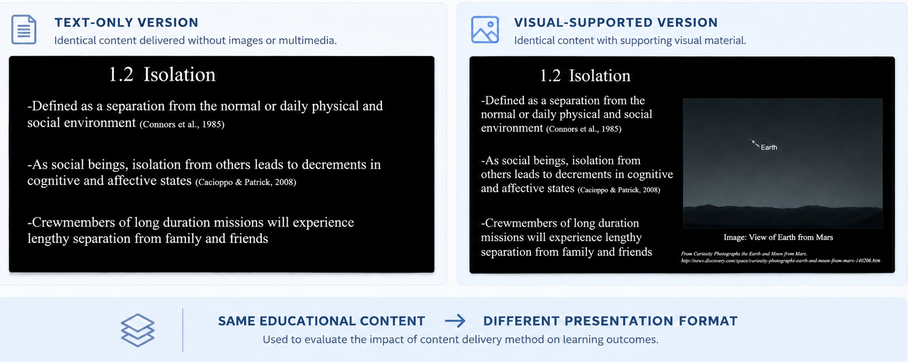

The Research Question
Does matching the method of educational content delivery with an individual's cognitive style improve learning outcomes?
Context
The project addressed a shortage of accessible educational material covering psychosocial issues in space life sciences, including topics such as isolation, confinement, and crew cohesion.
I developed educational material covering these topics and used the study to examine whether different approaches to presenting the same information affected learning outcomes.
Study Design
Participants completed a screening process to determine cognitive style before entering the experimental portion of the study.
Participants were randomly assigned to receive either text-only educational material or the same material supported by images and video.
Learning was measured using a pretest, an immediate post-test, and a second post-test one week later to examine knowledge retention.
What I Designed
Two versions of the same educational module were developed. One consisted exclusively of text, while the second combined text with more visually stimulating material, including images and video.
I also developed the assessment used to evaluate participants' knowledge of the material and conducted item analysis before the experimental study.
My Role
- Developed educational content focused on psychosocial issues in spaceflight.
- Designed the experimental study and participant screening process.
- Developed and evaluated the learning assessment.
- Recruited and screened participants.
- Collected and analyzed study data.
- Conducted statistical analysis and interpreted the findings.

Comparison of the text-only and visual-supported versions of the same educational content used in the study.
Research Methods & Analysis
Study Methods
- Participant screening
- Random assignment
- Experimental design
- Pre/post testing
- Knowledge retention testing
Quantitative Analysis
- Descriptive statistics
- Item analysis
- 2 × 2 × 3 mixed factorial repeated-measures ANOVA
- Post-hoc comparisons with Bonferroni correction
- IBM SPSS
Key Findings
Participants significantly improved their knowledge following exposure to the educational material, with learning retained at the one-week post-test.
Cognitive style did not have a significant main effect, and matching cognitive style with the method of material delivery did not produce the expected improvement in learning outcomes.
Interestingly, participants receiving the text-only material outperformed those receiving the visually supported material in the post-test comparisons.
Why It Matters
The study provided a way to evaluate educational design decisions using real participant data rather than assuming that a particular presentation format would be more effective.
The findings also showed that adding images and video did not automatically improve learning. The results highlighted the importance of testing how information is presented and how people actually respond to different learning experiences.
Thesis
Master's thesis, University of Houston, 2016.